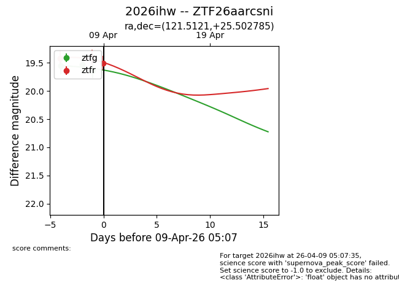
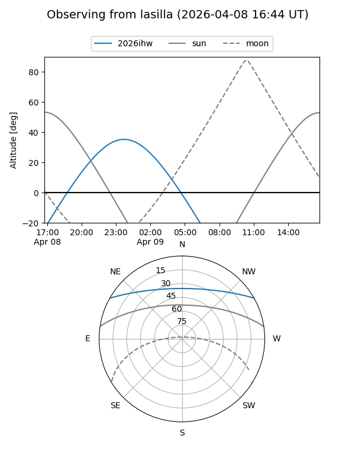
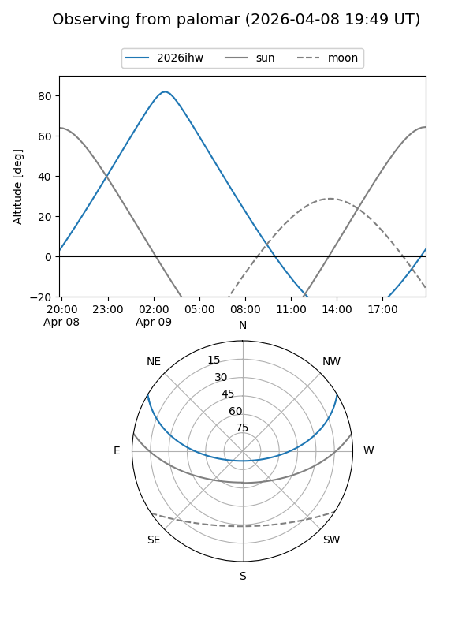
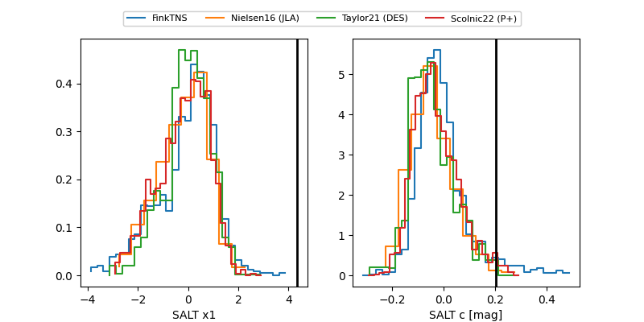

2026ihw
Target 2026ihw at 2026-04-09 05:14
Aliases and brokers:
FINK: link
Lasair: link
ALeRCE: link
TNS: link
YSE: link
alt names
ZTF26aarcsni (ztf,fink_ztf)
2026ihw (tns,yse)
Coordinates:
equatorial (ra, dec) = 121.5121,+25.50279
equatorial (HMS+DMS) = 08:06:02.91,+25:30:10.03
galactic (l, b) = (196.5396,+26.95151)
Flags:
Photometry:
last ztfg=19.64, ztfr=19.50
3 ztfg, 3 ztfr detections
Lightcurve

Visibility


Additional plots
